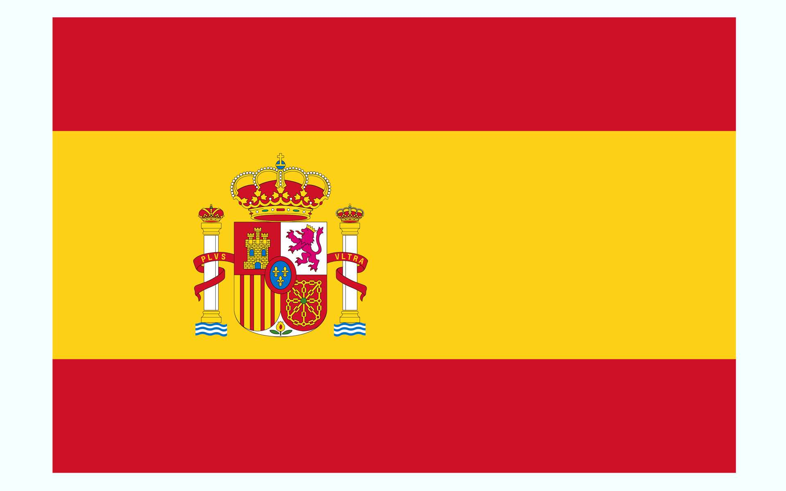

| «Ё» в правилах транскрипции с некоторых европейских языков | ||
|---|---|---|
| язык | информация | примеры |
| болгарский | через ё передаётся сочетание ьо, а также иногда (в некоторых случаях после гласных) йо | Жельо → Желё, Змейово → Змеёво (но Панайот → Панайот) |
| датский | ё используется только для передачи буквы ø после согласных | Jørgen → Йёрген, Nørgaard → Нёргор |
| испанский  | через ё передаётся только буквосочетание yo, и то не во всех случаях | Yoel → Ёэль (при более распространённом Йоэль), но Pelayo → Пелайо |